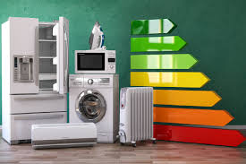

Linea Blanca
Los electrodomésticos son dispositivos eléctricos diseñados para realizar diversas tareas en el hogar, especialmente en áreas como la cocina, la limpieza, el cuidado de la ropa y la climatización. Estos dispositivos están destinados a facilitar las labores domésticas, ahorrar tiempo y energía, y mejorar la comodidad y la calidad de vida de las personas.
Los electrodomésticos han evolucionado con el tiempo, incorporando tecnologías más avanzadas para mejorar su eficiencia energética, su rendimiento y su facilidad de uso. Además, los electrodomésticos inteligentes conectados a Internet (IoT) están ganando popularidad, lo que permite a los usuarios controlar y monitorear sus electrodomésticos desde sus dispositivos móviles.

Brayna Abigail Flores Rodirguez
5to BACO
Liceo valle del sol